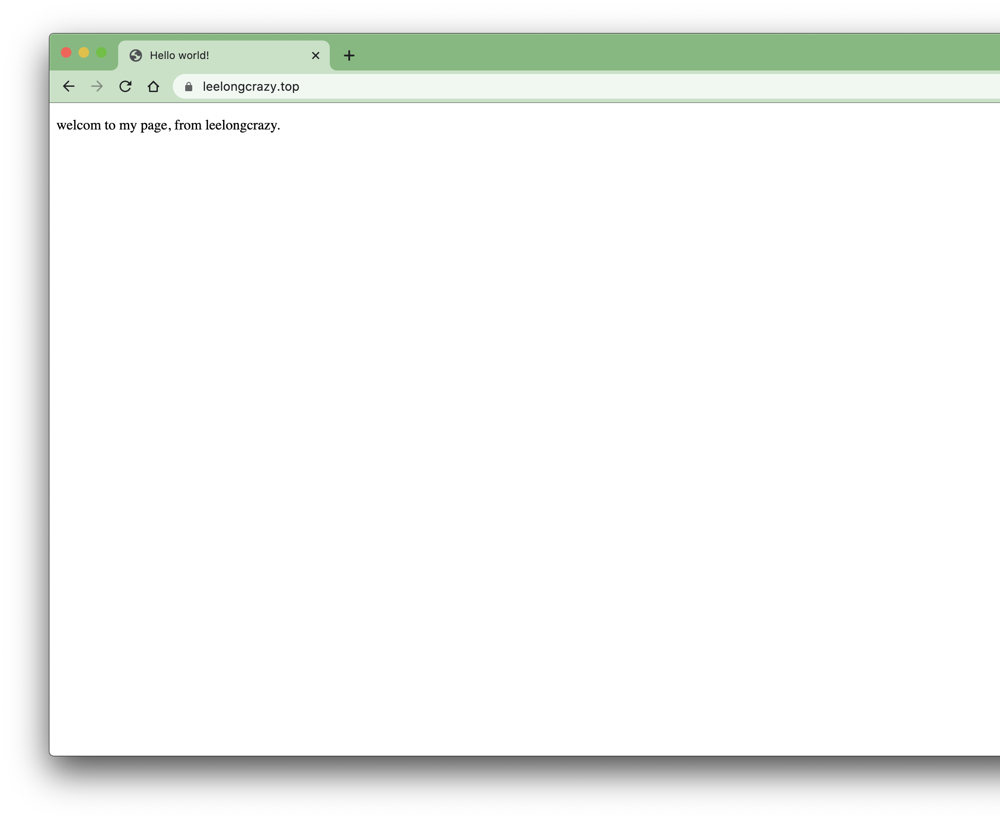

踩坑记录
Centos7安装uwsgi出现关于SSL错误的问题
系统中安装了两个版本的OpenSSL，冲突了导致uwsgi安装一直不成功。 pip install uwsgi # 不成功 源码编译安装也不成功
core/subscription.o: In function `uwsgi_remove_subscribe_node':
subscription.c:(.text+0x942): undefined reference to `EVP_MD_CTX_free'
subscription.c:(.text+0x991): undefined reference to `EVP_MD_CTX_free'
core/subscription.o: In function `subscription_new_sign_ctx':
subscription.c:(.text+0x13c5): undefined reference to `EVP_MD_CTX_new'
subscription.c:(.text+0x1456): undefined reference to `EVP_MD_CTX_free'
core/ssl.o: In function `uwsgi_ssl_init':
ssl.c:(.text+0xa9): undefined reference to `OPENSSL_init_ssl'
ssl.c:(.text+0xb5): undefined reference to `OPENSSL_init_ssl'
ssl.c:(.text+0xc1): undefined reference to `OPENSSL_init_crypto'
core/ssl.o: In function `uwsgi_ssl_new_server_context':
ssl.c:(.text+0x200): undefined reference to `TLS_server_method'
ssl.c:(.text+0x2e5): undefined reference to `SSL_CTX_set_options'
ssl.c:(.text+0x321): undefined reference to `SSL_CTX_set_options'
ssl.c:(.text+0x53e): undefined reference to `SSL_CTX_set_options'
core/ssl.o: In function `uwsgi_rsa_sign':
ssl.c:(.text+0x7ac): undefined reference to `EVP_MD_CTX_new'
ssl.c:(.text+0x832): undefined reference to `EVP_MD_CTX_free'
ssl.c:(.text+0x955): undefined reference to `EVP_MD_CTX_free'
core/ssl.o: In function `uwsgi_sni_cb':
ssl.c:(.text+0xe1b): undefined reference to `SSL_CTX_get_options'
ssl.c:(.text+0xe26): undefined reference to `SSL_set_options'
collect2: error: ld returned 1 exit status
*** error linking uWSGI ***
根据出错信息定位到大概是OpenSSL出了问题，一直在网上寻找编译指定OpenSSL路径到方法，最后在网上找到这篇文章。
yum remove openssl-devel
问题解决了。
nginx安装
nginx服务程序安装成功后，网站需要增设https支持功能，编译的nginx没有添加对应https服务的--with-http_stub_status_module --with-http_ssl_module这两个模块，重装编译的过程历尽艰辛，后来又重新安装编译了更新版本的openssl 模块，因为没有指定对openssl路径的问题，在编译nginx过程中频繁出错，改目录，改编译配置文件都没有成功，失败的次数越多对编译的流程越来越熟悉，最终还是成功的把nginx服务编译成功了。
直接上图。 